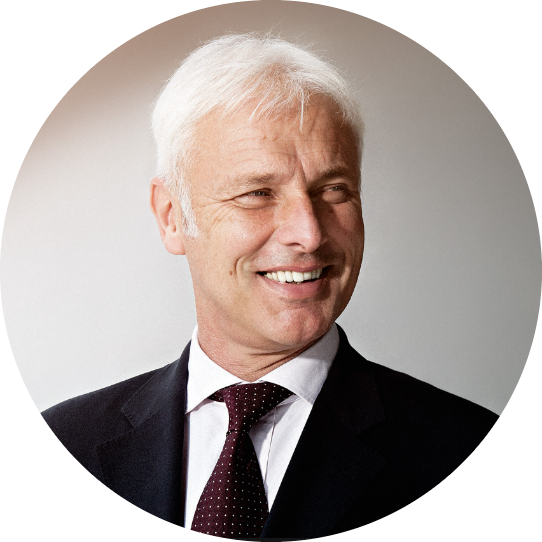

|  | Matthias MüllerCEO of the Volkswagen Group Matthias Müller (62) has been appointed CEO of Volkswagen AG with immediate effect. This was decided by the Supervisory Board at its meeting in Wolfsburg today. Müller remains Chairman of Porsche AG until a successor has been found. |
| Dates | Work |
|---|---|
| June 2017 | Volkswagen Group will successively equip new TSI and TFSI engines with gasoline particulate filters |
| 22 June, 2016 | Matthias Müller, the CEO of Volkswagen Aktiengesellschaft, presented “TOGETHER – Strategy 2025” |